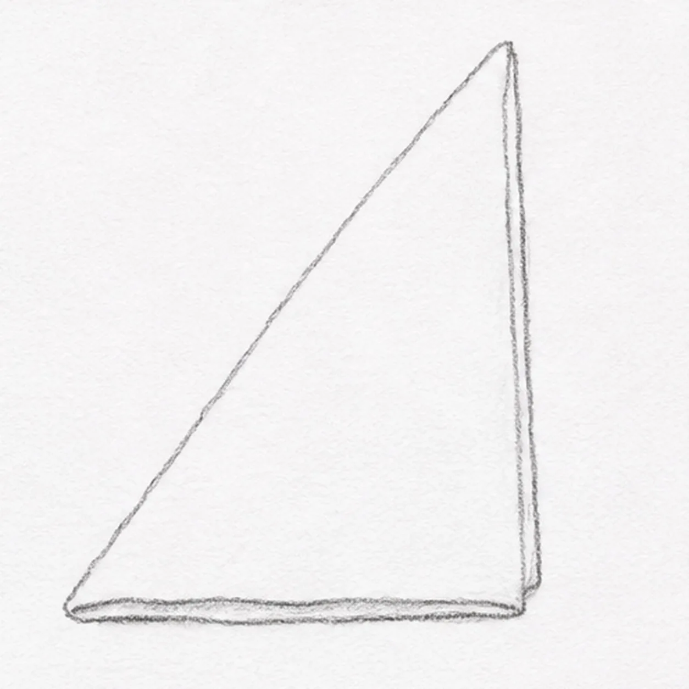
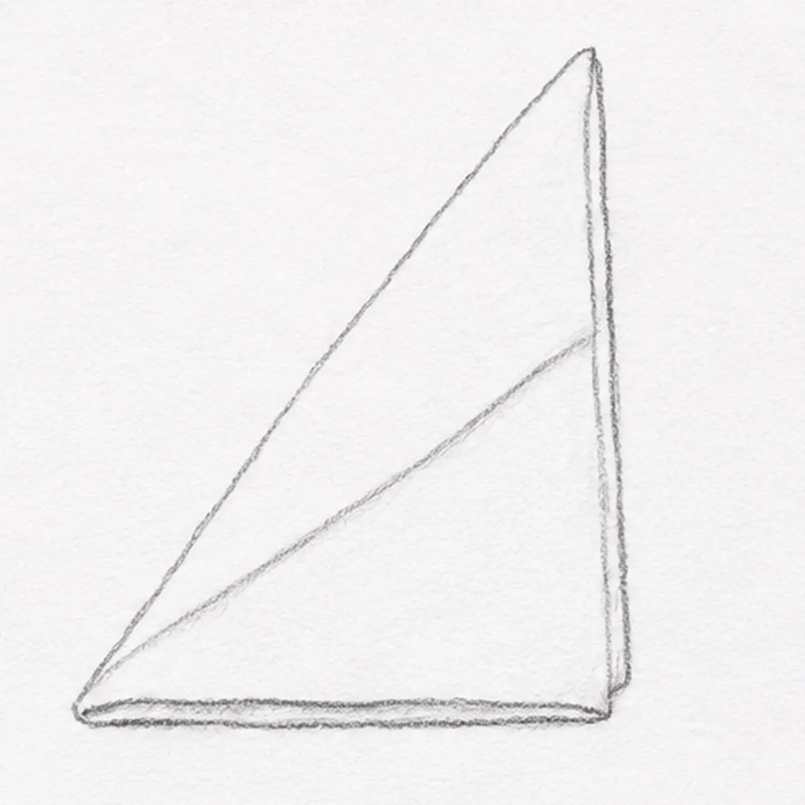
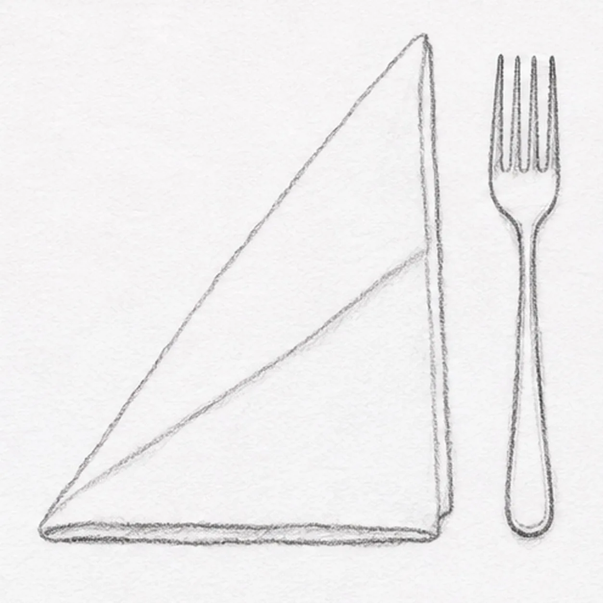
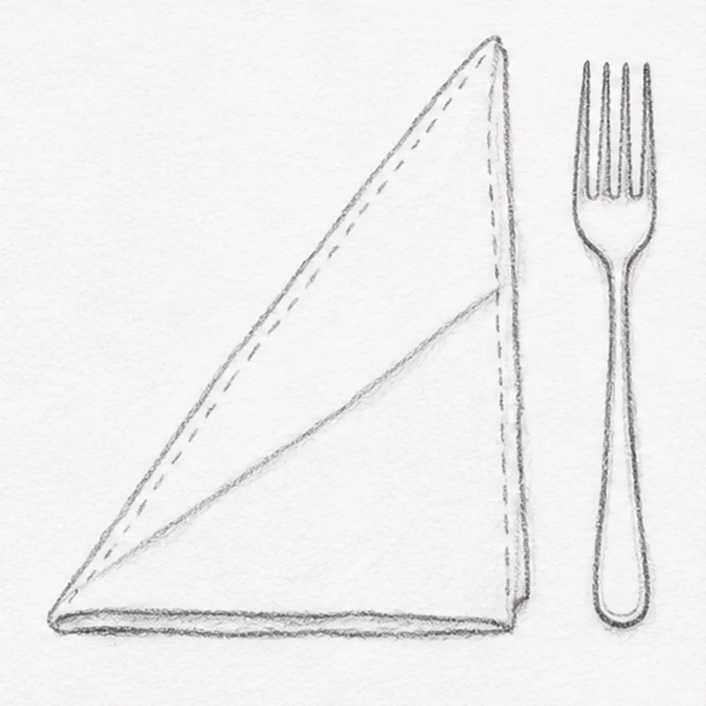
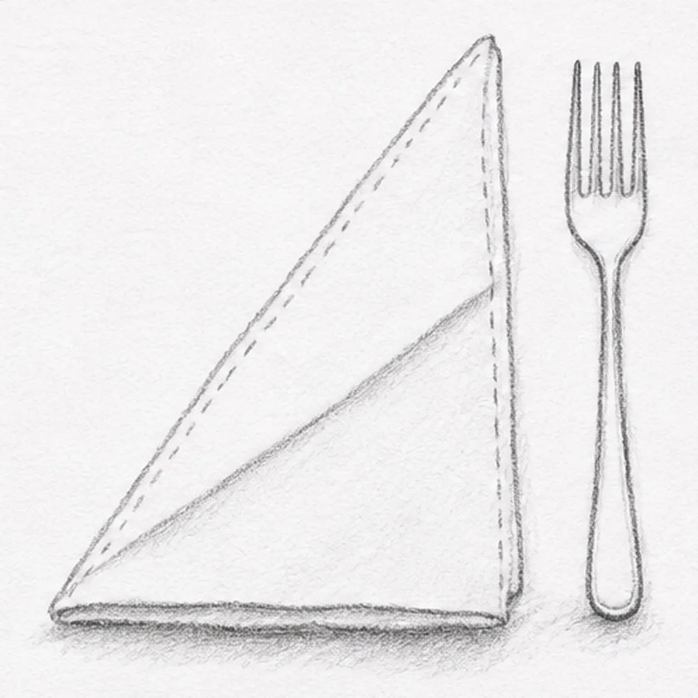

Pencil ready?
Let’s draw a folded napkin
Treat this as one small practice round: build the subject lightly, notice the shapes, then darken only the lines that help the finished sketch.
-
01

Shape the napkin
Draw a tall folded napkin triangle, with a narrow doubled bottom and right hem.
Sketch tip: Leave space to the right for the fork.
-
02

Fold one corner
From the low left point, draw one diagonal fold toward the right edge.
Sketch tip: Meet the fold at the existing right edge.
-
03

Draw the fork
Beside the napkin, draw a complete slim fork with a rounded handle and four separate tines.
Sketch tip: Count four separate tines.
-
04

Mark the hem
Add short dashed seam marks inside the upper-left and right napkin edges.
Sketch tip: Keep seam dashes short and inside the outline.
-
05

Ground the objects
Shade a soft broken cast shadow beneath the napkin and fork.
Sketch tip: Break the shadow beneath each object.
-
06
Shade the folds
Shade the two established napkin planes lightly in blue-gray, and darken the fork and existing ground shadow.
Sketch tip: Keep the two cloth planes distinct.